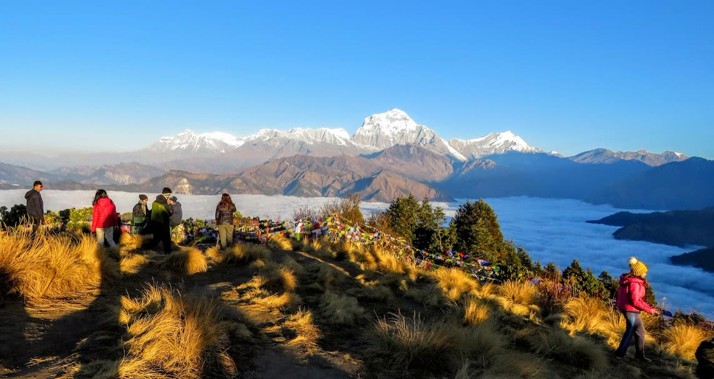
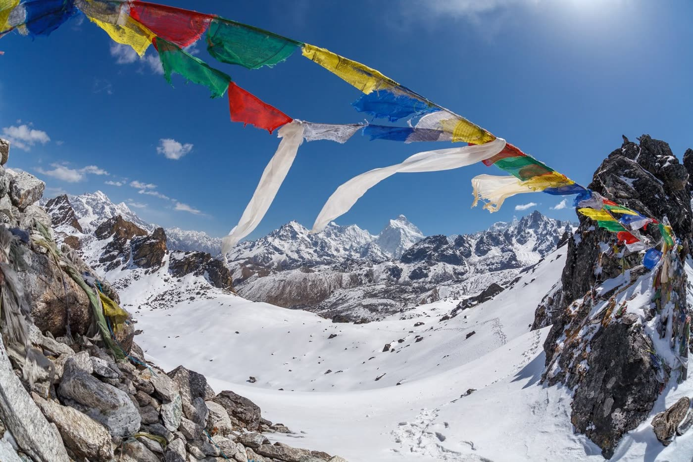
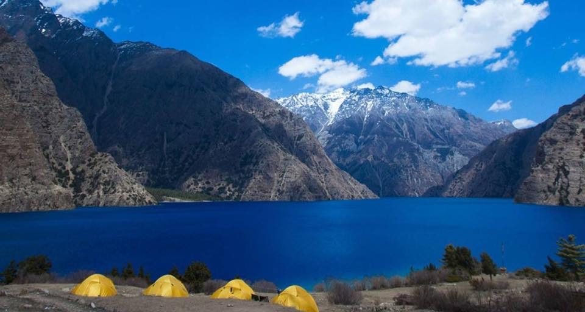
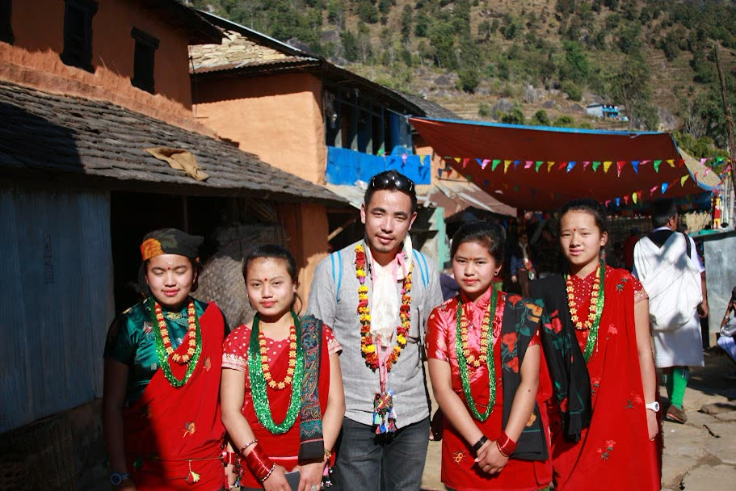

Dhaulagiri Base Camp Trek - 18 Days
The Dhaulagiri Base Camp Trek, organized by Nepal Unique Treks & Expeditions, is an 18-day trek that takes us to the base camp of the 8167-meter-tall Dhaulagiri Peak. Well, it's not just another Trek in Nepal; it’s a full-blown expedition into one of Nepal’s boldest, most remote, and adrenaline-charged landscapes.





Key Trip Facts
Trek Overview
Trip Highlights
Dhaulagiri Base Camp Trek Highlight
A thrilling, adventurous, and exciting trek to the Dhaulagiri Base Camp, which takes 18 days.
This trek offers a journey into the remote and wild Himalayan terrain, where you can traverse deep valleys, alpine glaciers, and steep ridgelines.
Reach the base camp of Dhaulagiri and witness a close and extravagant view of Dhaulagiri peak (8,167m) from its base camp at 4,740 metres.
Also, chances to ascend through some other base camps, including the Italian base camp, Glacier camp, before reaching Dhaulagiri Base Camp.
A beautiful opportunity to delve deep into the culture, tradition, and religion of this trekking region while interacting with the locals.
Trekkers can visit the World's deepest Gorge, the Kali Gandaki Gorge, framed by the Dhaulagiri and Annapurna massifs on either side.
Begin the package with a scenic drive from Kathmandu to Beni, followed by a return drive from Pokhara to Kathmandu.
Lay your eyes on some of the most exciting Himalayan peaks, including Dhaulagiri I, Dhaulagiri II, Dhaulagiri III, Dhaulagiri V, and potentially Annapurna I.
Dhaulagiri Base Camp Trek Overview
The Dhaulagiri Base Camp Trek, organized by Nepal Unique Treks & Expeditions, is an 18-day trek that takes us to the base camp of the 8167-meter-tall Dhaulagiri Peak. Well, it's not just another Trek in Nepal; it’s a full-blown expedition into one of Nepal’s boldest, most remote, and adrenaline-charged landscapes. Moreover, Dhaulagiri also sits as the seventh-highest peak in the world, with an altitude of 8,167 meters above sea level. Well, if you want some crave-worthy challenges, solitude, and jaw-dropping mountain vistas, this off-the-map adventure is your ultimate playground.
Nicknamed the gateway to the Hidden Valley, Dhaulagiri sits still, refreshingly untouched by the buzz of mainstream trekking. From lush jungle trails and cascading rivers to steep moraines and frozen passes, this trek throws a little bit of everything your way. Besides, this trekking route also takes us to hike through enchanted rhododendron forests, camp beneath starlit glaciers, and conquer French Pass (5,360m) and Dhampus Pass (5,240m). Furthermore, every step in the trek to Dhaulagiri Base Camp rewards you with epic views of Dhaulagiri I, Tukuche Peak, and the glorious Annapurna range.
The adventure pauses for a breather (and some serious eye candy) at the serene Italian Base Camp, where acclimatisation meets alpine magic. After that, we walk further to the world’s deepest gorge, the Kali Gandaki gorge. However, let us remind you that the Dhaulagiri Base Camp Trek is not just a trek through rock and ice; it’s also a voyage into Himalayan culture. During the trek, we come across several Thakali and Tibetan-influenced communities, explore ancient monasteries, and walk through villages where time stands still.
Permits for the Dhaulagiri Base Camp Trek
Just like any other trekking route in Nepal, the Dhaulagiri Base Camp Trekking package also requires trekkers to obtain some important permits. Here are the permits that you need to obtain for the trek to Dhaulagiri Base Camp:
Trekkers Information Management System (TIMS)
Restricted Area Permit (RAP)
Annaurna Conservation Area Permit (ACAP)
Booking the package with Nepal Unique Treks & Expeditions means that our local representatives assist you throughout the permit-obtaining process. Therefore, the trekkers do not have to worry much about the hassle that comes with the formalities.
Best Season for the Dhaulagiri Base Camp Trek
Trekking to Dhaulagiri Base Camp is an intense, high-altitude journey that demands favourable weather for both safety and enjoyment. Choosing the right season significantly improves your experience, offering clearer skies, better trail conditions, and more comfortable temperatures. Since this route includes crossing glacier fields and remote mountain passes like French Pass (5,360m) and Dhampus Pass (5,240m), timing your trek well is essential for a successful adventure. Therefore, we recommend the trekkers to choose the Spring season (March to May) and the Autumn Season (September to November) as the most ideal seasons.
Here’s a breakdown of what to expect in each season:
Spring (March to May)
Ideal for trekking, with stable weather, moderate temperatures, and blooming rhododendron forests adding colour to the lower trails.
Autumn (September to November)
The most popular season due to crisp skies, excellent visibility, and cool, dry days. Trails are in their best condition.
Winter (December to February)
Suitable only for highly experienced trekkers. Heavy snow and extreme cold often block passes and make camping conditions very tough.
Monsoon/Summer (June to August)
Not recommended. Rain causes slippery trails, landslides, leeches, and limited visibility, making the trek risky and less enjoyable.
Late October to early November & late March to mid-April
These short windows within the best seasons offer the perfect mix of clear weather, thinner crowds, and dramatic mountain views.
Dhaulagiri Base Camp Trek Difficulty Level
Dhaulagiri Base Camp Trekking journey is considered to be a strenuous trekking package in Nepal. For that reason, we recommend only experienced trekkers to go on this trek. Let us tell you that the trek includes crossing two major high passes: French Pass (5,360m) and Dhampus Pass (5,240m), as well as navigating through glaciers, crevasses, and isolated alpine terrain. Due to steep ascents through some challenging trails, the Dhaulagiri Base Camp Trek demands excellent physical condition, strong mental resilience, and prior experience with high-altitude trekking or mountaineering.
Besides, here are a few more factors that make this a difficult and strenuous trek in Nepal:
The trail requires the trekkers to walk for about 5-8 hours a day over rough terrain, including moraines, scree slopes, icy sections, and unmarked alpine trails.
Much of the trek remains above 3,500m, with extended time at high elevations. This means that there are higher risks of altitude sickness and fatigue.
This trek also takes us past some remote parts of the region with few to no villages or rescue facilities. Due to that, the trekkers must fully rely on their guides and support team.
Unlike teahouse treks, this route involves multi-day tented camping with no access to basic amenities, adding to the physical and logistical challenge.
We also need to trek over snowfields, glaciers, and crevassed zones, requiring balance, caution, and sometimes technical gear.
Furthermore, the journey also includes weather shifts, altitude strain, and the raw wilderness, requiring mental toughness and physical stamina throughout the journey.
Dhaulagiri Base Camp Trek - 18 Days Itinerary: Day by Day
18 Days program for Dhaulagiri Base Camp Trek - 18 Days. Daily timings and sequences remain flexible according to weather, flight operations, and group pace.
Day 1: Arrival in Kathmandu International Airport and Transfer Hotel, 1345m
Approx. 1,345 m / 4,413 ft
As you land at the Tribhuwan International Airport, Kathmandu, our local representative will receive you and drive you to the hotel. As you drive through the capital’s winding streets, you’ll get your first glimpses of Nepal’s eclectic energy, temples on every corner, prayer flags fluttering, and the snow-capped peaks peeking from a distance. After checking in at the hotel room and getting a quick rest, feel free to take a gentle stroll through nearby streets like Thamel. This lively hub and happening area is perfect for relaxing, recovering from jet lag, and preparing mentally for the epic journey ahead. In the evening, you can return to the hotel for a cozy and comfortable sleep.
Day 2: Kathmandu city tours and Trekking gear preparation for the base camp trek.
Approx. 1,345 m / 4,413 ft
Before officially starting the journey towards the Dhaulagiri Base Camp Trekking route, we will set aside the second day for preparation. After breakfast, you’ll embark on a guided tour of Kathmandu’s UNESCO World Heritage Sites, including the sacred Swayambhunath (Monkey Temple), Boudhanath Stupa, and Pashupatinath Temple. In the afternoon, it’s time to meet your trekking guide for a detailed expedition briefing. You’ll check your gear, review the itinerary, and make any last-minute purchases in Thamel’s well-stocked shops. This day builds both excitement and confidence, setting the tone for the days ahead.
Day 3: Drive from Kathmandu to Beni (830m./2,723ft.) - 8 to 9 hrs
Approx. 830 m / 2,723 ft
We officially begin the journey towards the Dhaulagiri region on the third day. After you have breakfast in the hotel, our local representatives will drive you from Kathmandu to Beni, which takes about 8 to 9 hours. This scenic drive goes along the Prithvi Highway and hugs the Trishuli and Marsyangdi rivers. Furthermore, the trekkers will also witness terraced hillsides, rural villages, and the ever-changing backdrop of the mid-hills and snow-dusted peaks. By the late afternoon, we will reach Beni, a riverside town and the administrative center of Myagdi district. Besides, this town also serves as the gateway to the Dhaulagiri region. After reaching Beni, you can check in at the hotel before strolling around. Interact with the locals, and enjoy the views and experience that Beni offers before having dinner and an overnight stay.
Day 4: Trek from Beni to Babiyachaur (950m / 3,116ft) - Approx. 5-6 hrs
Approx. 950 m / 3,117 ft
On the fourth day, we start walking on the Dhaulagiri Base Camp Trekking map. Today, the trail takes us from Beni to Babiyachaur, a small farming village at an altitude of 950 meters. Talking about this section of the Dhaulagiri Base Camp Trekking route, this path follows the Kali Gandaki River and passes through charming villages and fertile farmland. Besides, you can also witness that the terrain is gentle but gives you a chance to adjust to the rhythm of daily trekking in Nepal’s countryside. As we reach Babiyachaur within about 5 to 6 hours of leaving Beni, you can expect warm hospitality from the locals and a peaceful environment. These factors provide a soft introduction to the trek, where you also get chances to relax in the pristine and scenic environment of this lovely village.
Day 5: Trek from Babiyachaur to Dharapani (1,400m / 4,593ft) -Approx. 6-7 hrs
Approx. 1,400 m / 4,593 ft
As you wake up on the fifth day and have breakfast, the guides lead you on a trek from Babiyachaur to Dharapani. On this day, the trekkers can expect a gradual altitude gain that heads deeper into the Myagdi Valley. Furthermore, this section of the trek also passes through terraced rice fields, suspension bridges, and waterfalls. In a short while, the trail from Babiyachaur to Dharapani starts to narrow down and grow more rugged. Besides, we will also witness the landscapes shifting, where forested slopes and glimpses of distant peaks tease you from a distance. It takes about 6 to 7 hours for us to reach Dharapani, a village located at an altitude of 1400 meters above sea level. This village, dotted with traditional houses and prayer flags, starts giving off those culturally rich vibes of the region. Besides, the trekkers can also interact with the locals, delve deep into the scent of burning juniper, and the sounds of the river echoing through the valley. Also, just imagine having dinner with the cool mountain air before heading for a cozy sleep.
Day 6: Trek from Dharapani to Muri (1,720m/5,643ft) - Approx. 6-7 hrs
Approx. 1,720 m / 5,643 ft
As usual, we begin today's trek after having breakfast in the hotel and preparing for the walk. Today's journey begins with a gentle descent through terraced rice fields and vibrant hillside villages. The starting section of this section of the Dhaulagiri Base Camp Trek crosses a suspension bridge over the Myagdi Khola. Furthermore, the trekkers also climb through forests and open up to sweeping Himalayan views. Besides, we can also expect the lush hills to give way to a more remote landscape as we head deeper into the Dhaulagiri region. On the way, the trekkers also pass through several other villages with traditional houses, where you often listen to the pleasant sounds of birds chirping. Within the next 6 to 7 hours, we will finally reach Muri, a village perched high above a river gorge. Here, the trekkers can expect to witness stunning vistas of Dhaulagiri South and Gurja Himal. Furthermore, this beautiful village also offers a peaceful stop and warm hospitality with comparatively fewer trekkers. In the evening, we rest in a basic teahouse, surrounded by the sounds of nature after having a fulfilling dinner.
Day 7: Trek from Muri to Baghara (2,080m/6,824ft) - 6 hours
Approx. 2,080 m / 6,824 ft
After a fulfilling and delicious breakfast, we leave Muri and walk towards another section of the Dhaulagiri Base Camp Trek. This part of the trek begins by descending steeply through pine forest, crossing a narrow suspension bridge. Besides, the trekkers also get a chance to climb gradually through terraced hillsides and thick woodland. Throughout the seventh day of the trek to Dhaulagiri Base Camp, we pass small pastures, waterfalls, and vibrant rhododendron clusters. Moreover, as we dive deeper into today's trail, the journey becomes quieter and more remote. Furthermore, let us also tell you that you will start noticing fewer settlements while the landscapes feel wild and pure. Talking about Baghara, it's a secluded settlement surrounded by steep hills and thick forest. Moreover, this village also feels like stepping into an untouched corner of Nepal, where the lodging is basic, but the views and atmosphere are rich in peace. Along with that, the quiet allows you to fully appreciate your surroundings. The Nepal Unique Treks & Expeditions team arranges both dinner and overnight stay in Baghara before we continue the trek further.
Day 8: Trek from Bagar to Dobang (2,520m/8,268ft) - Approx. 5-6 hours
Approx. 2,520 m / 8,268 ft
Today’s trail takes us deeper into the forested heart of the Dhaulagiri wilderness. We hike through dense bamboo groves, pine forests, and lush moss-covered terrain. Furthermore, this section of the Dhaulagiri Base Camp Trek starts narrowing while also crossing several small rivers and landslide zones. Let us warn you that this section of the trail might be slippery. Therefore, we recommend all the trekkers to wear good boots and keep proper balance while walking on the trail. As we ascend higher on the map, we can notice the landscape opening up to rugged cliffs and snowy peaks. Within about 5 to 6 hours, we finally reach Dobang, a village that sits on the edge of a wide, forested river valley. Also, reaching this village means we stand at an altitude of 2520 meters above sea level. Besides, this beautiful village also offers a peaceful and shaded rest stop with basic shelter and meals. One of the best things about this village is that it is perfect for good acclimatization for trekkers looking to hike up to the Dhaulagiri Base Camp.
Day 9: Trek from Dobang to Italian Base Camp (3,660m/12,008ft), Approx. 6-7 hours
Approx. 3,660 m / 12,008 ft
Starting from the ninth day, we will be crossing different camps until the twelfth day, which is when we reach the Dhaulagiri Base Camp. On the ninth day, our journey begins early, following the Myagdi Khola as we trek steadily uphill into more alpine terrain. Besides, the trekkers can expect cooler and thinner air as we walk past glacial rivers, moraines, and sharp ridgelines, all framed by massive peaks. As we ascend to a significant altitude, the trekkers can notice Dhaulagiri's imposing north face coming into view, one of the major highlights of the journey. After 6 to 7 hours of walking, we will finally reach the Italian Base Camp, situated at an altitude of 3660 meters above sea level. This base camp is set against a massive wall of ice and rock, offering a surreal and majestic experience. Moreover, the snow-dusted cliffs also surround the Italian Base Camp, making it one of the most scenic spots on the trek. So, just take as many photos and videos as you want to. Despite the altitude, it’s a comfortable place to sleep and prepare. As you take your time to stroll around the base camp, the porters and staff set up tents and meals in this stunning setting.
Day 10: Rest day at Italian base camp
Approx. 3,660 m / 12,008 ft
If you are familiar with trekking, you must have an idea about how important acclimatization is. Acclimatization or rest is very important while trekking to prepare one's body for higher altitudes ahead. However, this does not mean that we sit idly in the base camp. Instead, the Sherpa guides take you for some short hikes to nearby ridges and viewpoints. These active rests support adaptation and improve blood oxygenation while showcasing Dhaulagiri's massive ice wall dominates the skyline. Moreover, the Italian Base Camp also offers space to reorganize gear and enjoy hot meals. As the trekkers return from the short hike, the Sherpa guides monitor everyone for altitude-related symptoms and provide safety briefings for upcoming glacier travel. Do you know what that results in? Well, it makes the tenth day a great day for reflection, photography, or simply soaking in the mountains. Moreover, you can also notice prayer flags fluttering above us as the sun lights up snow-capped ridges. Overnight stay will again be organized in tents as on the previous night.
Day 11: Trek from Italian base camp to Glacier camp (4,200m/13,779ft) Approx. 5-6 hours
Approx. 4,200 m / 13,780 ft
Leaving the Italian Base Camp, we head into wild glacier terrain on the eleventh day. The trail becomes more technical, with rockfall-prone areas and narrow ridges, where we also cross loose moraines and small creeks. As we ascend higher on this section of the Dhaulagiri Base Camp Trek, you can witness stunning glacier views unfolding beneath Dhaulagiri’s towering cliffs. Compared to any other day of this trekking journey, today's journey is shorter but more demanding due to altitude and shifting terrain. Within the next 5 to 6 hours of an amazing ascending walk, we reach the Glacier Camp, a camp set on a rugged moraine by the Chhonbardan Glacier. Besides, the trekkers can expect the location to feel remote and surreal, surrounded by glacial silence. Also, let us tell you that today's tonight will also be spent in tents, wrapped in extreme wilderness and snow-draped peaks. Nevertheless, the Nepal Unique Treks & Expeditions' guides ensure every camper’s safety and comfort here.
Day 12: Trek from Glacier camp to Dhaulagiri Base Camp (4,740m/15,551ft) - Approx. 6-7 hours
Approx. 4,740 m / 15,551 ft
The twelfth day sits as the most awaited day of the entire Dhaulagiri Base Camp Trek as we finally reach the Dhaulagiri Base Camp. This section of the trail requires us to walk along the glacier’s edge, carefully navigating rocky, icy ground. Remember that the cold bites harder as we gain altitude, which means that you must wear multiple layers of clothes to keep yourself warm and safe from extreme temperatures. Besides, the towering flanks of Dhaulagiri also dominate the landscape throughout. It takes us about 6 to 7 hours to finally reach the Dhaulagiri Base Camp, located at an altitude of 4740 meters above sea level. This base camp sits in a massive glacial amphitheatre with panoramic views of Dhaulagiri I and surrounding peaks. Besides, the remote, stark, and awe-inspiring experience of the Dhaulagiri Base Camp offers a different calmness and feeling of accomplishment. As you take your time to collect memories, our Serpa guides prepare meals and tents for an overnight stay. Tonight will be spent in the base camp itself, under the shadow of the seventh massive peak in the world.
Day 13: Trek from Dhaulagiri base camp to French Col (5360m), Hidden Valley
Approx. 5,360 m / 17,585 ft
On the thirteenth day, we finally ascend to the highest peak of the entire Dhaulagiri Base Camp Trekking map. Early in the morning, the Sherpa guides lead you towards the French Pass (5360 meters). Remember to get ready with headlights, trekking poles, and multi-layer clothes as we will be walking in the dawn. Besides, the hike to French Pass also ascends over snow-covered terrain and a high-altitude glacier. Therefore, we recommend the trekkers to go for a slow and steady walk where the weather is cold and the wind intensifies with almost every step. As you reach the French Col, Hidden Valley offers mind-blowing views of Dhaulagiri I, Tukuche, and Hidden Valley. Besides, the Hidden Valley is a vast, wind-swept alpine plateau surrounded by snowy giants. Moreover, this place also feels desolate and majestic. The Nepal Unique Treks & Expeditions sets up tents for the trekkers to have dinner and spend the night in the Hidden Valley itself. Besides, you can also expect a silence which is profound, broken only by wind and crunching snow.
Day 14: Trek from Hidden Valley (5200m) to Yak Kharka (3,680m/12,073ft) - Approx. 6-7 hours
Approx. 4,930 m / 16,175 ft
After so many days of an ascending journey, the fourteenth day finally marks the beginning of the descending part. Today's journey begins with a steady ascent over Dhampus Pass (5,240m), the last high-altitude challenge of the trek. Furthermore, the trekkers can also expect the path to be icy and exposed to strong winds. Also, let us tell the trekkers to get their crampons and micro spikes ready for this section of the Dhaulagiri Base Camp Trek. From the top, views stretch to the Annapurna and Nilgiri ranges. After summiting, we descend through alpine ridges and rocky slopes. After about 6 to 7 hours of a descending journey through a drier terrain with grazing fields and sparse vegetation, we finally reach Yak Kharka. It's a quiet pastureland with yak sheds and a simple lodge setup where the oxygen levels rise and your body starts feeling better. After several days of spending the night in tents, we spend tonight in a hotel or lodge.
Day 15: Trek from Yak Kharka to Jomsom (2,720m/8,924ft), Approx. 5-6 hours
Approx. 2,720 m / 8,924 ft
After a delicious breakfast in the lodge, we steadily along a dry, windy trail into Mustang’s dessert-like landscape. This section of the Dhaulagiri Base Camp Trek also curves through hillside trails, apple orchards, and small settlements. After a few river crossings and ridge turns, Jomsom greets us with stone-paved streets and prayer flags. The landscape feels instantly more populated and accessible. Jomsom, a small settlement with an airport, lodges, and warm local eateries, also serves as the district hub of Mustang. At an altitude of 2720 meters above sea level, the trekkers can enjoy a hot shower, a clean bed, and a well-earned meal. Besides, the dry, breezy town sits beside the Kali Gandaki River with Nilgiri rising behind it. Overnight stay and dinner will be arranged by our guides at Jomsom before we descend any further.
Day 16: Flight from Jomsom to Pokhara
Approx. 820 m / 2,690 ft
Depending on the flight schedule, the Nepal Unique Treks & Expeditions guides will take you to the small airstrip at Jomsom for our scenic flight to Pokhara. This short but unforgettable flight follows the Kali Gandaki Gorge, the deepest in the world. Besides, the trekkers can also enjoy outstanding panoramic views of Annapurna, Nilgiri, and Dhaulagiri soaring above. What we recommend the trekkers do is to keep their cameras or smartphones ready to capture all the views this flight has to offer. Upon landing in Pokhara, the warmth and greenery feel almost surreal after the stark alpine wilderness. Check in at the hotel room before spending a day off by the lakeside and do whatever you like. For example, you can get a massage or sip coffee while watching paragliders overhead. Overnight stay and dinner will be arranged in Pokhara for the night.
Day 17: Drive from Pokhara to Kathmandu
Approx. 1,345 m / 4,413 ft
Today, we travel back to Kathmandu via a scenic drive along the Trishuli and Marsyangdi Rivers. The journey offers rolling hills, farm terraces, bustling roadside towns, and distant mountain glimpses. After days of trekking, the drive allows you to fully process the magnitude of what you’ve accomplished. We reach Kathmandu by evening and settle back into our hotel in the lively Thamel district. This is a great time to do last-minute shopping or simply enjoy a celebratory dinner with your trekking team. Share stories, exchange photos, and toast to the epic memories forged in the high Himalayas. The city lights feel both familiar and distant after your remote alpine adventure.
Day 18: Final Departure
Approx. 1,345 m / 4,413 ft
Finally, it's the last day of the 18-Day Dhaulagiri Base Camp Trekking package. After you have breakfast in the hotel, our local representatives will drive you to the Tribhuwan International Airport based on your flight schedule. However, if you have any other adventures planned in Nepal itself, you can book another package simultaneously.
What is Included (Regular Package)
What is Excluded
Booking Dates & Availability
Packing List for Dhaulagiri Base Camp Trek - 18 Days
Tents, kitchen equipment, dining crew, and porters are handled by our logistics team on restricted/remote camping routes.Expedition Duffel & Trail Hardware (5 items)
Severe Weather Apparel (4 items)
Camping Comfort & Power (3 items)
Read before you book: Dhaulagiri Base Camp Trek - 18 Days
Practical logistics derived directly from this package's route facts, inclusions, and elevation profile.
Accommodation & Meals (Hotel, Lodge & Tea House and Camping)
Accommodation follows the package grade (Hotel, Lodge & Tea House and Camping) in Kathmandu and along the Off The Beaten Trails route. Check your package Includes section for included meals and Kathmandu hotel nights.
Permits & Local Logistics
Transportation is arranged via Flight & Private Car. Applicable permits listed in the package inclusions are arranged by Nepal Unique Treks prior to departure.
Route Difficulty & Elevation (5360 m)
Dhaulagiri Base Camp Trek - 18 Days is rated Adventurous with a maximum elevation of 5360 m. Follow your guide's pacing and stay hydrated throughout the 18 Days itinerary.
Best Time to Visit (October, November, December (Autumn Session), March, April, May (Spring Session))
Recommended operating season on the source page: October, November, December (Autumn Session), March, April, May (Spring Session). Additional official notes from the source page follow below.
Traveller Useful Information
As mentioned above, the Dhaulagiri Base Camp Trek isn’t your average walk in the park; it's a bold, remote adventure that demands grit, prep, and the right mindset. During this journey, we will be navigating steep climbs, glacial terrain, and high mountain passes, all while camping under the stars in one of Nepal’s wildest regions. However, with proper preparation and planning, the Dhaulagiri Base Camp Trek becomes a lot easier and convenient for you.
Here’s how to get yourself trek-ready:
Start Training Early
Begin your physical training at least 8 to 10 weeks before the trek. Focus on building cardiovascular endurance through activities like hiking, running, swimming, or cycling. Besides, you should also focus on strengthening your legs and core with hill workouts and bodyweight exercises. The fitter you are, the more you'll enjoy each day on the trail.
Practice Trekking With Weight
Trekking with a loaded backpack mimics real trail conditions and helps prepare your muscles and joints. Start with light loads and gradually increase the weight to around 10-12 kg. Go for multi-hour walks or hikes on uneven terrain to improve balance and stamina. This will also help you adjust to carrying essentials during the trek.
Know the Altitude Game
Acute Mountain Sickness (AMS) can affect anyone, regardless of fitness. Learn the symptoms: headache, nausea, fatigue, and understand when to stop, rest, or descend. Make sure to read up on acclimatization techniques and consider carrying medication like Diamox after consulting your doctor. Besides, knowledge and caution are your best defences at high altitude.
Invest in the Right Gear
The Himalayas throw all kinds of weather at you: sun, snow, wind, and rain, often in one day. Invest in breathable layers, a down jacket, a waterproof shell, warm gloves, and a beanie. Sturdy, well-broken-in boots and a sleeping bag rated for -15°C or lower are essential. Also, remember that quality gear means better comfort, safety, and performance on the trail.
Get Insured Properly
Don’t skimp on insurance; make sure it covers trekking above 5,000m and emergency helicopter evacuations. Medical facilities in remote areas are limited, so fast access to care can be life-saving. Some policies even cover lost baggage and trip delays. Furthermore, we also recommend that the trekkers print a copy and keep it handy during the expedition.
Pack Patience and Positivity
Himalayan weather is famously unpredictable, and delays or route changes can happen. Instead of stressing over what you can’t control, focus on soaking in the experience. Besides, a flexible mindset and a good sense of humour can transform tough moments into memorable stories. Embrace the journey; every challenge adds to the adventure.
The Dhaulagiri Base Camp Trek blends teahouse and camping accommodation. In the lower regions (Beni to Dobang), you’ll stay in basic teahouses offering local meals such as dal bhat, noodles, soups, and simple curries. However, as we gradually gain altitude and reach more remote regions, we can expect limited accommodation, food, and facilities.
From Dobang and Italian Base Camp, the region becomes too remote for teahouse infrastructure. From here on, you’ll be camping in tents managed by your expedition crew. Besides, the Sherpa team prepares the meals while keeping them nutritious, calorie-dense, and energy-boosting from a major point of view. Even though the options are limited, Nepal Unique Treks & Expeditions ensures warm, clean, and comforting food along with purified or boiled drinking water.
Therefore, if you book the Dhaulagiri Base Camp Trekking package with us, we ensure arrangements of proper, cozy, and comfortable accommodation with hygienic and healthy food.
Packing wisely stands as one of the major factors to make the Dhaulagiri Base Camp Trek accessible and less difficult. As the trail crosses glaciers, high passes over 5,000 metres, and remote alpine zones with no access to shops beyond the early villages, trekkers must be smart enough to carry all the essentials themselves. Here are some of the most important packing list for the Dhaulagiri Base Camp Trek:
Clothing
Moisture-wicking base layer tops (thermal)
Thermal base layer bottoms
Fleece or wool trekking shirts
Mid-weight fleece or down jacket
Heavy-duty down jacket (for high camps)
Waterproof and windproof jacket (Gore-Tex recommended)
Pair waterproof trekking pants
Trekking trousers (quick-dry)
Pair insulated pants (for base camp and cold nights)
Pairs of trekking socks (wool/synthetic blend)
Pairs of thermal socks (for higher camps)
Pairs of gloves (inner liner + insulated outer)
Warm hat/beanie
Sun hat or cap
Neck gaiter or buff
Sunglasses with UV protection
Footwear
Sturdy, waterproof trekking boots (well broken-in)
Gaiters (for snow and scree protection)
Lightweight camp shoes or sandals (for resting)
Camping & Sleeping
Four-season sleeping bag (rated -20°C or lower)
Sleeping bag liner (adds warmth and cleanliness)
Sleeping mat (foam or inflatable, optional as group mats may be provided)
Travel pillow (optional but handy)
Technical Gear
Crampons (glacier travel days)
Harness
Climbing helmet
Ice axe (optional for some seasons)
Carabiners and rope
Backpacks & Bags
1 large duffle bag
1 daypack
Dry bags or packing cubes
Hydration & Health
Water bottles (2 x 1L) or hydration bladder
Water purification tablets or a filter (essential)
Personal first-aid kit
Sunscreen (SPF 50+) and lip balm with SPF
Hand sanitiser and personal hygiene items
Quick-dry towel and biodegradable soap
Altitude sickness medication (Diamox, if prescribed)
Wet wipes and toilet paper
Electronics & Other Essentials
Headlamp with extra batteries
Power bank or solar charger
Camera or phone with a protective case
Lightweight book or journal
Trekking poles (highly recommended)
Passport copies, permits
Snacks or trail bars
Small garbage bag
Did you read the entire Dhaulagiri Base Camp Trekking package with Nepal Unique Treks & Expeditions? So, are you ready for the adventure? In that case, just hit the BOOK NOW button on the right side of the package to confirm your place for this outstanding adventure in the Dhaulagiri region. After booking the package, all you need to do is make a 20% advance payment to confirm the booking.
If you have any more queries or questions regarding the Dhaulagiri Base Camp Trekking package or any other packages offered by Nepal Unique Treks & Expeditions, just click on the INQUIRY NOW button just below the Book Now button. Besides, you can also directly contact us via WhatsApp, Viber, or Zalo. Our team of experts will always be ready to assist you with every adventurous journey in Nepal.
Altitude Profile of Dhaulagiri Base Camp Trek - 18 Days
Weather on Dhaulagiri Base Camp Trek - 18 Days
Dhaulagiri Base Camp Trek - 18 Days Route & Area Overview
Book This Trek
Contact our Kathmandu coordinators using the booking panel for private or fixed-group departures.
Trip Feedback
Explore verified traveller stories or leave feedback on Nepal Unique Treks.
Visit Nepal Unique Treks